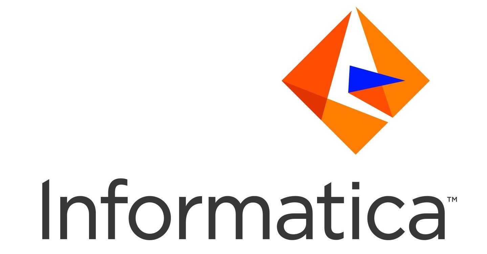

2022

Aug 2022 - Present
- Working on Dynamics 365 Customer Engagement
- Working on Power Platform to develop low code applications
- Developed applications using C# plugins and JavaScript
2022
Jan 2022 - June 2022
I joined Microsoft as intern first on Jan 2022 where I got introduced to Dynamics 365.
- Worked on Dynamics 365 Finance and Operations
- Did a mandatory training on the tool
- Worked on a stimulated project comprising of integration of environments and Dynamics 365 Finance & Operations development
- Learnt how to setup Virtual Machines using Azure Services in different reigons around the globe
2021

Aug 2021 - Jan 2022
- Worked with Informatica Master Data Management ( MDM ) team on Contact Master Project
- Worked on Informatica Cloud ( IICS ) and Powercenter
- Worked on Microsoft SQL Server
- Worked on ingress processes and Customer360 platform
2020

2020 - 2021
- Being a part of CodeX was more than just organizing events; it was about fostering a collaborative and innovative environment for all members.
- Society provided a platform to exchange ideas, share knowledge, and support each other's learning journeys.
- Teamwork and mentorship, we encouraged each other to reach new heights in our technical expertise.
- Overall, CodeX left a profound impact on me, shaping me into a more confident, capable, and empathetic individual ready to take on future challenges.
2018

2018 - 2022
- After completing my schooling, I joined MM(DU) to pursue a Bachelor's degree in Computer Science Engineering.
- Throughout my academic journey, I delved into the fundamentals and advanced concepts of Computer Science Engineering
- I had the opportunity to work on various projects, one notable example being 'NOTES MMDU.' This innovative portal empowered students to access notes from any semester or subject at their convenience.
- In addition to that, I developed a COVID tracker that served as a valuable tool for monitoring active and new corona cases.
- These experiences further honed my skills and provided me with practical insights into the field of computer science.